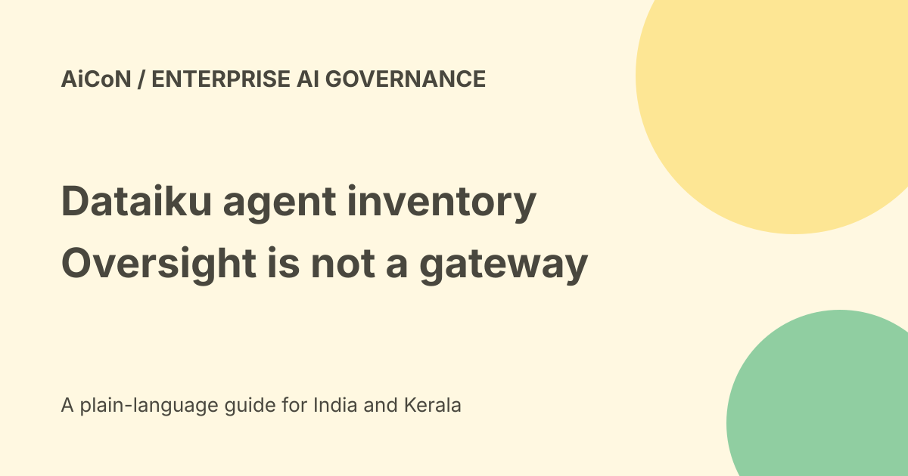

Dataiku Agent Management: inventory, oversight and availability
Dataiku describes Agent Management as a standalone product for discovering agents, monitoring their performance and managing risk across connected platforms. Its current FAQ says it will be available in October 2026. That month-level statement is not proof that a particular customer can use every integration today.

The problem it addresses
Teams can create agents on different platforms without a complete central record. An organisation may not know which are live, who owns them or what they cost.
Dataiku says the product brings connected agents into one inventory with ownership, purpose, connections and last-run information. The word connected matters: it cannot be assumed to discover systems to which no access has been granted.
Monitoring after discovery
The official September blog describes tracking health, usage, cost, quality and behaviour over time. Drift from a normal pattern can flag an agent for a person to examine.
A healthy server does not prove the agent's answer is correct. Likewise, a dashboard showing cost does not establish that every bill, tool call or external expense is included.
Platforms named by Dataiku
The current product FAQ names Microsoft Copilot Studio, Azure Foundry, Salesforce Agentforce, AWS Bedrock, Google Vertex, Databricks, Snowflake Cortex and Dataiku itself.
The launch blog also mentions Google Gemini Enterprise and coded agents using OpenTelemetry. These source lists are not identical. Confirm your exact platform, version and available telemetry rather than treating both lists as a promise of equal integration depth.
Integration depth has limits
The FAQ says third-party connections use native APIs and log streams. A user selects and authenticates a framework, after which agents can be scanned into the inventory.
It explicitly says depth depends on what each platform exposes and that deeper integrations are being developed. Missing logs, restricted permissions or incomplete metadata can leave gaps.
Not an AI gateway
Dataiku distinguishes Agent Management from a gateway. A gateway sits between agents and tools and controls traffic. Agent Management sits above them and keeps track of them.
The blog says it does not operate the agents or step into their decisions. Monitoring alone should not be described as automatically blocking every unsafe action. For Dataiku-built agents, the FAQ assigns the gateway role to LLM Mesh.
Risk and certification
The blog describes risk assessment and certifying higher-risk agents against documented checks before they go live.
A certification record is evidence that a stated review occurred. It is not a permanent safety guarantee. Define who approves deployment, what changes require a new review and how an incident is handled.
A sensible enterprise pilot
- List the platforms and known agents manually first.
- Confirm current access and connector availability.
- Use a restricted test connection with approved logs.
- Compare discovered entries with your expected inventory.
- Check owners, purpose and last-run timestamps.
- Reconcile cost figures with source billing.
- Test a harmless change and inspect what is detected.
- Document missing data and update delays.
- Keep prevention and incident controls separate.
No connector was authenticated, log stream submitted or private agent inventory uploaded for this guide.
October 2026 availability
The FAQ says will be available in October 2026, without a specific date in the checked page. Obtain a current written statement of what your tenant can use before planning a rollout.
A demo request is not product access. The article does not claim general availability of every feature or a production result from an untested deployment.
India, free access and pricing
No public final tariff, self-service free allowance, INR quote or India-hosting entitlement was established for Agent Management.
Ask about the standalone licence, connectors, retention, implementation and support. Free editions of another Dataiku product should not be treated as a grant for this one.
Privacy and permissions
Logs can expose prompts, customer records, file names, responses and access metadata. Check what each connection collects, where it is processed and who can see it.
Apply existing access restrictions to exported reports too. Governance software does not automatically authorise disclosure to every manager or audit mailbox.
What changed since the original post?
We preserve the inventory and monitoring purpose, add the current October availability wording, explain differing platform lists and distinguish oversight from a traffic gateway or automatic prevention.
Frequently asked questions
Does it control every agent action?
The official blog says it does not operate agents or step into their decisions.
Is every connector equally deep?
No. Dataiku says depth depends on platform exposure.
Is an India free plan confirmed?
No.
Sources: Current official product and FAQ · Official September launch blog. Checked 7 October 2026.